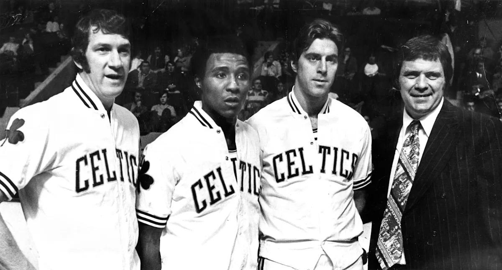
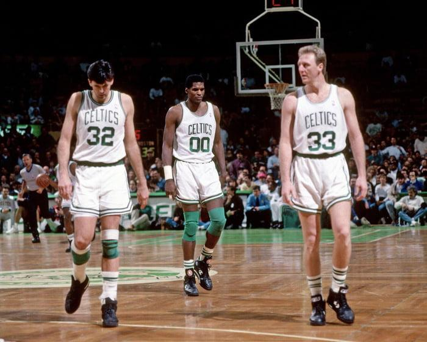
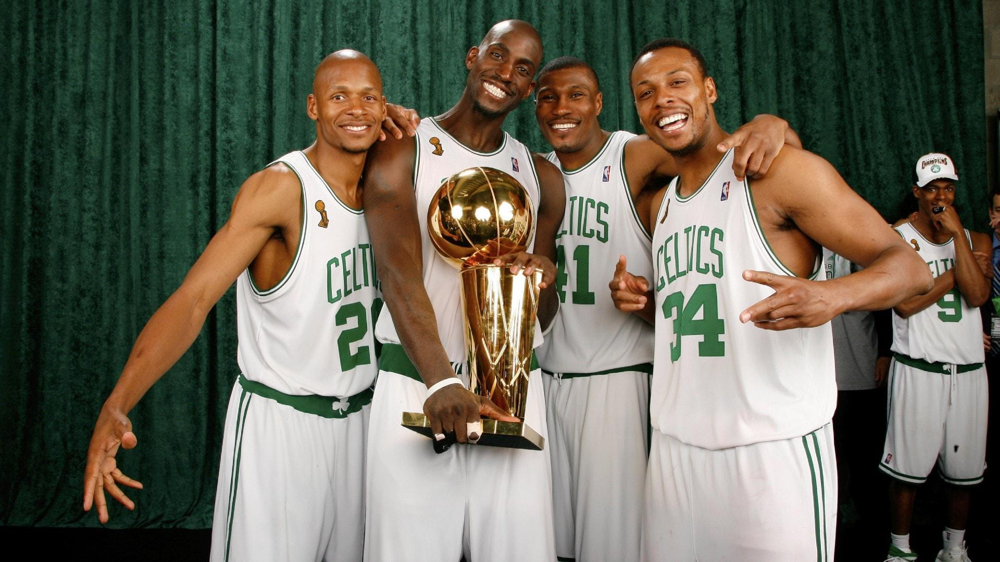
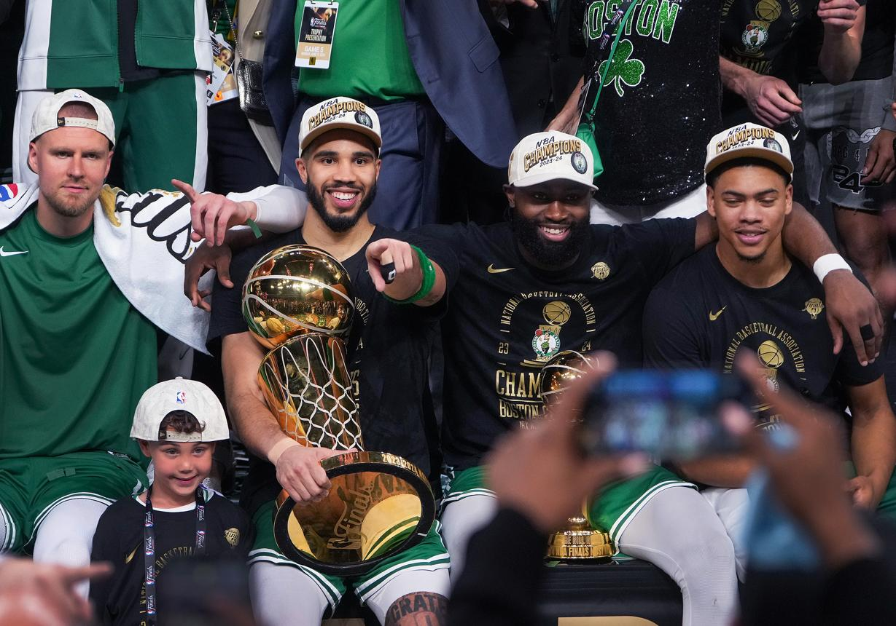

Boston Celtics History
The Boston Celtics were founded in 1946 by Walter A. Brown and quickly became one of the most successful franchises in professional basketball. Over the decades, the organization has built a legacy defined by championship victories, legendary players, and a strong basketball tradition. From the early years of the NBA to the modern era, the Celtics have remained one of the most recognized teams in the league.

The Bill Russell Dynasty (1950s–1960s)
The Celtics became a dominant force in basketball after drafting Bill Russell in 1956. Under head coach Red Auerbach, Russell helped lead Boston to 11 NBA championships between 1957 and 1969. One of the team's greatest accomplishments was winning eight consecutive championships from 1959 to 1966. This era established the Celtics as a basketball dynasty and made Bill Russell one of the greatest players in NBA history.

The 1970s: Continued Success
Following the Bill Russell era, the Celtics continued to compete at a high level. Led by players such as John Havlicek and Dave Cowens, Boston won NBA championships in 1974 and 1976. These teams helped maintain the franchise's winning tradition and kept the Celtics among the league's most competitive organizations.

The Larry Bird Era (1980s)
The 1980s marked another important chapter in Celtics history with the arrival of Larry Bird in 1979. Alongside teammates such as Kevin McHale and Robert Parish, Bird helped lead Boston to three NBA championships in 1981, 1984, and 1986. During this period, the Celtics developed one of the NBA's most famous rivalries with the Los Angeles Lakers, creating some of the most memorable matchups in basketball history.
The Return to Glory (2000s) After several challenging seasons, the Celtics returned to championship success in 2008. The team brought together Paul Pierce, Kevin Garnett, and Ray Allen to form a powerful lineup. Under head coach Doc Rivers, Boston defeated the Los Angeles Lakers in the NBA Finals to win its 17th championship. This victory marked the franchise's first championship in 22 years.
The Modern Celtics (2020s) The Celtics entered a new era led by Jayson Tatum and Jaylen Brown. The two stars helped establish Boston as one of the NBA's top teams and led the franchise to the 2022 NBA Finals. In 2024, Boston defeated the Dallas Mavericks in the NBA Finals, securing its 18th championship and setting the franchise record for the most NBA titles in league history.